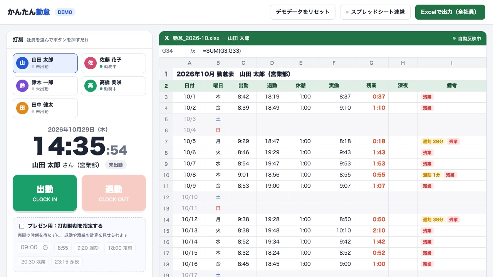

①AI研修（法人向け）
専門用語は使わず、受講者の「実際の業務」を題材に進める実践的な研修です。AIを初めて触る社員の方が、「自分にも使えた！」という実感を持ち帰ることを目指します。
- 【内容】初めてのAI / AIで業務を楽にする / 人事・採用×AI
- 【特徴】貴社の業務やご希望に合わせて内容をカスタマイズ可能
- 【形式】対面・オンラインの両方に対応
私自身、文系出身で当初はAIにまったく興味がありませんでした。
だからこそ、講座でよく耳にするこんな不安な声に深く共感します。
実はこれ、少し前の私自身の言葉です。
プログラミングの経験がない私でも、いまはAIを相棒にして簡単なゲームやアプリを作れるようになりました。
AIは、年齢やITスキルに関係なく使える便利な道具なのです。
だからこそ、研修を通して皆様に持ち帰っていただきたいのは、専門的なAIの技術ではありません。
「自分にも使えた！」という実感です。
AIを初めて使う方に向けて、3つの形で支援しています。
専門用語は使わず、受講者の「実際の業務」を題材に進める実践的な研修です。AIを初めて触る社員の方が、「自分にも使えた！」という実感を持ち帰ることを目指します。
日々の業務を一緒に洗い出し、AIを使える場面を見つけるところからスタートします。導入して終わりではなく、社内で当たり前に使われ続けるまで伴走するのが私の役目です。
メール返信の下書きや議事録づくりなど、毎日の作業をAIに任せる小さな仕組みをつくります。LINE予約システムや、HP・LP、PR動画といった制作にも対応できるのが強みです。
自主制作のデモとサンプルを載せています。
メニュー選択から予約完了の通知まで、LINE内で完結する流れを約30秒の動画でご覧いただけます。

打刻するだけで、実働・残業・深夜・遅刻を自動計算。Excelやスプレッドシートとの連携も可能です。ブラウザ上で実際の操作をお試しいただけます。
デモを試す自身のサービス（営業文添削）を紹介する動画です。用途に合わせて横型と縦型の2種類を制作しました。
「旅館」と「スーパーマーケット」の15秒CMをご覧いただけます。
※登場する会社や商品はすべて架空です。
新卒で入った会社から数えて、勤めた会社が3度なくなりました。そのたびに次の道を探して必死に歩んできた経験が、いまの仕事の土台になっています。
大学卒業後、新卒で入社した会社で人事としてのキャリアをスタート。日々の労務や採用業務をこなしながら、2003年にはFP2級を取得。社内に人事コンサル部門を立ち上げるなど順調に経験を積むもその後、会社が倒産。事業は他社へ引き継がれることに。元上司からの誘いを受け、新たな舞台であるホテルへ移ることに。
次の舞台となったホテルでは人事の全権を任され、自社だけでなく協力会社の人事制度づくりや採用支援まで主導するなど、精力的に活動。しかし、経営の行き詰まりから会社はまたしても倒産。人事責任者として全社員の再就職支援に奔走する中で、仕事を失う人々の切実な不安を間近で痛感することに。
40歳を過ぎてからの転職活動は困難を極め、約30社に応募してようやく採用された小売チェーンの会社。入社後は採用計画から面接、社員教育まで人事全般を任され、全力を注ぐ。しかし、その後経営不振により廃業。
私にとって、これが3度目の会社の倒産。
コロナ禍によって中途採用が軒並み止まり、人事職での再就職が非常に難しい状況に直面。そこで私が選んだのは、1,000人以上の面接を通して身につけた「採用する側の視点」を活かせる、人事専門ライターの道。
最初はクラウドソーシングの低単価な案件から地道にスタートし、一つずつ着実に実績を積み上げ、これまでに制作した記事は累計1,000本以上。いまでは自ら執筆するだけでなく、編集やディレクション、さらにはライター講師として「書き手を育てる」仕事も任せていただけるように。
順調に実績を積み上げていたライター業にある日突然、最大の試練が。取引先から「今後はAIで記事を内製化する」と告げられ、抱えていたSEO記事の案件がほとんどなくなるという事態に。
まさに「AIに仕事を奪われる」という危機を肌で痛感した瞬間。「これからはAIに仕事を任せる企業が確実に増えていく。ならば、自分がAIを使いこなす側に回ろう」と決意し、本格的にAIを学び始める。
どん底の逆境から自らAIを学び、自身の仕事を立て直したこの経験。それこそが、現在の「AI研修」や「導入支援」の確固たる原点。
強みは、30年の人事経験と、AIで仕事を立て直した経験の両方を持っていること。人事時代の新入社員研修の講師経験を活かし、パソコンが苦手な方にもわかりやすく伝える。現在は研修や導入支援に加え、LINE予約システムやHP・LP、PR動画の制作も手がけている。
「これがAIに仕事を奪われるということか」そう痛感した体験が、いまの私の原点です
ChatGPTに初めて触れたときは将来性を感じたものの、「自分の専門性はAIには代替できない」と考え、実務で使えるレベルではないと高を括っていました。
取引先から突然の依頼打ち切りを告げられ、担当していたSEO案件がほぼゼロに。ここで初めて、AIに仕事を奪われる危機感を肌で痛感しました。
そこからスクールや講座で、AIを一から学び直しました。いまではルーティン業務の多くを自動化し、コンテンツ制作も「下書きや推敲はAI、編集や肉付けは自分」という分業ができています。
AIは使えば使うほど、自分の仕事を楽にしてくれる道具でした。
パソコンに触れたことのない両親に、ChatGPTの使い方を教えました。「スマホにアプリを入れる」ことすら知らなかった両親ですが、今ではすっかりAIを楽しんでいます。
最初に教えたのは、「今まで辞書で調べていたことを、声で聞いてごらん」というシンプルな使い方だけでした。その後、好きな花の名前を写真で調べられるようになったことをきっかけに、両親は日常的にAIを使い始めました。いまでは良き話し相手や困った時のパートナーとして、使いこなすまでに上達しているほどです。
AIを嬉しそうに使う両親の姿を見て、私は本気で思うようになりました。高齢の方にこそ、AIを使えるようになってほしい。
ある日、公園のベンチで高齢の方に話しかけられた時のことです。私自身すぐには答えられず、「ちょっと待ってください、AIに聞いてみますね」とスマホで調べたのがすべての始まりでした。
そんなことがあった際にこの方から頼まれ、なんと老人会の集まりでAIの講義を行うことに。そこでは「元気なうちに遺影写真を作っておきたい」というご相談も受け、AIで作成してお渡ししました。
このように、パソコンに不慣れな方にも「わかりやすく教える」ことができるのは、人事時代に毎年、新入社員研修で座学の講師を務めてきた経験があるからです。30年間の「人を育てる」経験が、いまのAI教室にしっかりと活きています。
人事30年の経験と、AIで自分の仕事を立て直した経験をもとに、次のサービスを提供しています。
AIを初めて使う中小企業の社員の方に向けた、貴社の業務に合わせた研修です。
業務の洗い出しから、AIの導入、社内への定着まで伴走します。
メール返信や議事録づくりをAIに任せる仕組み、LINE予約システム、HP・LP、PR動画の制作です。
採用支援、個人向けのAI相談・AI教室・添削、記事制作もお受けしています。

AIを使ってみたいけれど、何から始めればいいかわからない。そんな段階のご相談も歓迎しています。